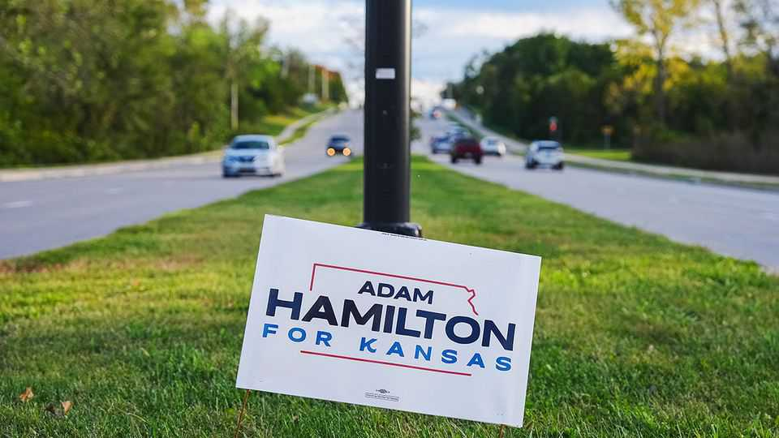
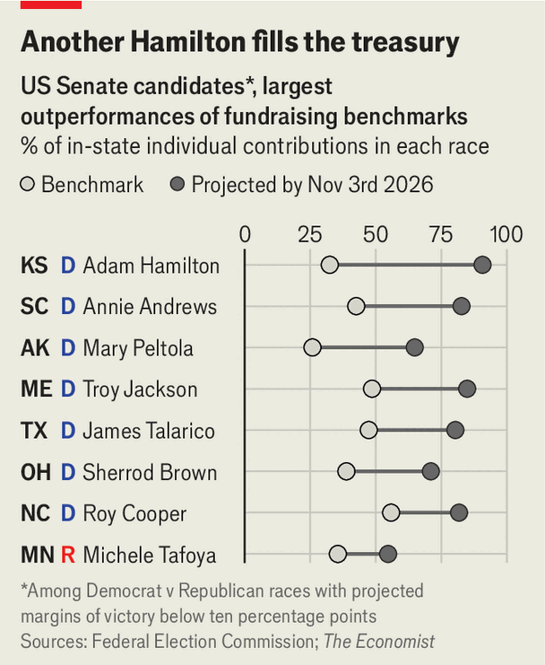

The midterms’ fundraising figures tell a surprising story
The money that matters most is flowing one way

Oct 22nd 2026
REPUBLICANS WERE supposed to have two big advantages in this year’s congressional elections: maps and money. Neither appears to be protecting them from a midterm bloodbath. Despite winning this cycle’s House gerrymandering war and benefiting from a red-hued Senate battleground, polls suggest that Republicans currently trail in both chambers. And new fundraising data should dent conservative hopes that the party’s candidates could close these deficits by swamping their opponents with advertising in the campaign’s final weeks.
Third-quarter financial reports show a “green wave” of Democratic money alongside the blue wave seen in polling. Excluding self-funding, Republican Senate candidates raised just $65m from July to September, compared with a whopping $276m for their opponents. Democrats had a smaller but still commanding advantage in House fundraising of $226m to $130m.

Republicans have offset these shortfalls with a big lead in spending by independent “super PACs”, which are not subject to donation limits. Elon Musk alone gave more than $200m to such groups in the third quarter. In total, Republican-aligned super PACs have outspent Democratic ones on Senate ads by $750m to $317m. However, these groups pay around three times more than campaigns do for advertising, making Democrats’ edge in direct fundraising far more valuable. As a result, according to the Wesleyan Media Project database, there were only 20% more Senate ads favouring Republicans than Democrats during the first half of October.
Moreover, money is not just a cause of campaigns’ success but also a measure of it. The more candidates raise from individuals (whose donations are capped at $3,500) in their states, the likelier they are to have large numbers of enthusiastic supporters. Nominee quality cannot be estimated from contribution ratios alone: incumbents generally out-raise challengers, and both parties enjoy big fundraising advantages in their electoral strongholds. But when candidates’ contribution shares are much larger than you would expect based on these factors, they often go on to overperform on election day.
By this measure, Democrats have large fundraising leads in almost every competitive Senate race. The most extreme case is Kansas, which has not elected a Democratic senator since 1932. The Economist’s forecast model reckons that in this year’s political environment, a standard Democrat trying to unseat a Republican incumbent in Kansas should get around one-third of instate individual donations. Instead, Adam Hamilton, a pastor and first-time candidate, has received a stunning 92%.
In two other Senate races the nominees changed during the summer, so no fundraising data were available on the new candidates until recently. In Maine Democrats replaced Graham Platner, who was accused of sexual assault, with Troy Jackson, a former state legislator.
In South Carolina, following the death of Lindsey Graham, the incumbent, Republicans nominated his sister Darline, a political novice. Democrats did remarkably well in these races: each of their candidates received around 85% of instate contributions.
The only competitive Senate race where a Republican had a clear fundraising edge was Minnesota. Michele Tafoya, a former sportscaster, has received 54% of instate donations in her contest against Peggy Flanagan, the Democratic lieutenant governor—19 points above the benchmark for a light-blue state in what looks like a deep-blue year. Sure enough, Minnesota also looks competitive in polls.
This year’s Democratic fundraising advantages are nothing new. During the past four congressional election cycles, the party’s Senate candidates have on average run 12 percentage points ahead of our model’s benchmarks. Yet Trump-era fundraising data have still reliably identified states where a party went on to beat expectations. This cycle, following the money adds credence to polling showing Kansas and Minnesota as two of the least likely battleground states in recent memory. ■
Stay on top of American politics with The US in brief, our daily newsletter with fast analysis of the most important political news, and Checks and Balance, a weekly note that examines the state of American democracy and the issues that matter to voters.